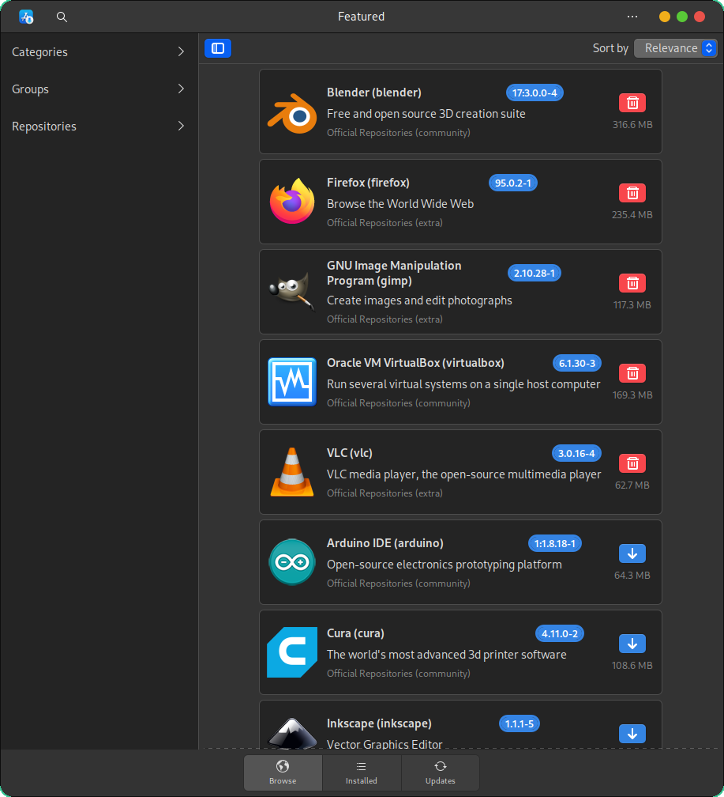

Finding and installing Linux applications
Many powerful software applications are available on the Linux operating system. You can find alternatives to most of the popular applications used on other systems.
You can use the CalinixOS package management system to install applications. Most essential applications are available from the repositories provided by chaotic-aur, arcolinux, arch linux and Calinix project. You can enable other repositories to get additional applications.
Package management in CalinixOS
Like most modern Linux distributions, CalinixOS uses a package management system. Package management tools automate installation, upgrading, and removing of software applications and components.
Each application or component is defined as a package. When the package is installed, all code, configuration, and other files are deployed on the system.
A single package is not necessarily the same as an application. Some applications can be shipped as several packages. Moreover, shared code (libraries) in Linux is normally shipped as separate packages, while in other systems applications often ship their own versions of required libraries and install them if necessary.
File placement
The package management tools track which files on your CalinixOS installation belong to each package; normally, every file that is installed in the /usr tree as well as most configuration files under /etc are installed by one of the packages. When installing a package, the package management system verifies its integrity; if any files are missing or corrupted, the package is not installed.
Resolving dependencies
The package management system also tracks all dependencies between the packages. For example, if an application requires some libraries, the package for this application lists the libraries as dependencies. When you install the application package, the package management tools automatically install the library packages. If a dependency is not available, the tools do not install the package, so you can avoid a sudden malfunction.
When you want to remove a package, package management tools cleanly delete all code files for this package without affecting other packages. By default, configuration files are not removed, so you can install the package again and keep the configuration that you have set up earlier.
Updating packages
Updating any package is entirely automatic with the package management system. The system replaces all the necessary code files and preserves existing configuration.
In fact, for most Linux distributions, including CalinixOS, all of the system installation except the earliest part is performed by installing various packages. Security updates and upgrades to a next release are performed entirely by package management tools.
Repositories
To get packages, Pacman uses repositories. A repository is an organized collection of packages. Repositories can be kept on any data media; notably, the CalinixOS installation image contains a repository. However, most up-to-date repositories are normally maintained online.
Each CalinixOS release has an official calinix repository and few other repositories like the chaotic-aur repository (which contains pre-built packages from the Arch User Repository), ArcoLinux 3rd party and ArcoLinux X-Large repositories (which again contain a large number of software outside the official Arch Linux repositories and are maintained regularly). And ofcourse the Arch Linux Repositories which make Calinix very close to actual Arch Linux when it comes to software release scheme. In these repositories, you can find almost any Linux software.
Installing from source code
While many Linux applications can be built and installed from from source code, using such builds can make your system much harder to manage. For example, automatic updates to system packages (especially when updating to the next release) might impact an application that was installed from source. And, of course, no automatic security updates are available for the application.
So we do not recommend building software from source code if you are not in for the hassle. You will find many software in the repositories and almost any software in the AUR, Flatpak or Snap.
Other installation methods
Sometimes you might need to install software using other package management systems. Notably:
- CPAN for libraries for the Perl language
- PyPI for libraries (and sometimes applications) for the Python language
- Commercial repositories for games
- Go for Golang-written applications
However, installing applications using the CalinixOS package management systems is the preferred option.
Searching for Linux software alternatives on the Web
To complete your tasks on a Linux system, you need to find the software applications that fit your needs. If you are switching from another operating system, you might need to find replacements for the software that you used before.
Most applications available on Linux are open-source software. You can use open-source software without acquiring any licenses. Moreover, widespread open-source software is usually available in the official CalinixOS repository, so you can install it easily.
Procedure
Access the following websites to review Linux alternatives to popular software packages:
- https://linuxappfinder.com/alternatives
- https://www.linuxalt.com/
- https://opensource.com/alternatives
- https://www.osalt.com/
- https://alternativeto.net/
Browsing and installing software through GUI
Since CalinixOS is based on Arch Linux, most of this tutorial can also be used for Arch Linux and its derivatives. The methods will be listed from easiest to more advanced.
- Using the Pamac graphical software manager tool
- Using pacman GUI front-end Octopi
- Using pacman commands
- Using yay AUR helper to install software from Arch User Repository
I am also adding several tricks to make things easier.
Method 1: Install and Remove Software in CalinixOS with Pamac
Here, we’ll be using Pamac to install/remove software in Calinix.
Install Software in CalinixOS with Pamac
Pacman is the package manager created by the Arch team and used by Calinix. This is probably the easiest way to install the software. We will cover it in depth later on. Right now, we focus on Pamac.
Pamac is a graphical application created to make Pacman easy to use. Like synaptic for apt.

You can either access Pamac by launching “Add/Remove Software” from the app menu (Launched by Super+R)
You can also launch the Software Manager
Pamac allows you to view software already installed, search for new software by name or by category. If you don’t find something you search for, you can also look for it in the Arch User Repository (AUR).

Your application will not be installed until you click “Apply”. You will be prompted to enter your password and after showing you a list of files it will download it will go to work.
It’s optional to click the “right arrow” next to the “Apply” button to see the terminal output.
Enabling AUR and Snap/Flatpak support in Pamac
Enabling the AUR and Snap or Flatpak support takes a couple of extra steps in Pamac. Click the 3 dotted menu in the upper right corner and select “Preferences”. You will be prompted to enter your password.

Now, select the “AUR” tab. Now flip the switch (toggle it on). Now, you will be able to install software from the AUR and keep them up-to-date.

Similarly, you can just head to the Snap and Flatpak options to “Enable Snap support” and “Enable Flatpak support” if you need.
Remove Software in CalinixOS with Pamac
Removing software using Pamac is as easy as installing it. All you have to do just click on the “remove” button on the right side of the screen. Once you selected all the packages you want to remove, click on “apply” button.
Method 2: Install and Remove Software in CalinixOS with Pacman command
Graphical applications are easy to use for beginners, but terminal or command line programs are more powerful and faster.
Install Software in CalinixOS with pacman
As I stated above, Pacman is the command line package manager for Arch based distros. To install an application, all you have to do is enter sudo pacman -S PACKAGENAME. Just replace PACKAGENAME with the name of the application that you want to install.
You will be prompted to enter your password. Once you enter it, your application will be downloaded and installed.

Pacman Installation
You can also install a group of packages such a GNOME using this command:
sudo pacman -S gnome
It’s that easy!
Remove Software in CalinixOS with pacman
Removing software with Pacman is just as easy. All you have to do is enter the following command:
sudo pacman -R PACKAGENAME
Just replace PACKAGENAME with the name of the package you want to remove.

Pacman Uninstallation
Tips to Improve Pacman Experience
Since it’s a terminal application, Pacman can run pretty quickly, Unfortunately, the process can be slowed down by a bad mirror.
You can use this command to rank mirrors by speed and remove out of date mirrors:
pacman-mirrors -g
When that is finished you will need to sync the Pacman database with this command:
sudo pacman -Syy
You may learn more about using pacman command for package management in Arch-based distributions in our detailed guide.
Method 4: Install and Remove Software in CalinixOS with yay
While you can’t install an application from the AUR using Pacman, there are a number of terminal programs that allow you to do just that. One of the most well-known examples is yay.
Install Software in CalinixOS with yay
You can install packages from both official repository and AUR. You first need to install yay on your machine. To do this, type in the commands below:
git clone https://aur.archlinux.org/yay.git
cd yay
makepkg -si
One nice thing about yay is that it gives you the ability to search for the application you want to install, all you have to do is use this command:
yay -S PACKAGENAME
Don’t forget to replace PACKAGENAME with the name of the application you are looking for.

Yay Installation
You will be prompted to enter “y” to continue. You will be prompted to enter your password and asked a couple more questions verifying that you want to install this application.
Depending on how large the file is and how much work “yay” has to do to prepare the file, the install may be finished quickly or take a while to complete.
Remove Software in CalinixOS with yay
To remove an AUR application with yay, just use the following command:
yay -R PACKAGENAME